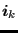
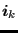
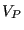
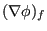
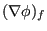

Keyword type: model definition, if structural damping: material
This card is used to define Rayleigh damping for implicit dynamic calculations(*DYNAMIC) and structural damping for steady state dynamicscalculations (*STEADY STATE DYNAMICS).
For Rayleigh damping there are two required parameters: ALPHA andBETA.
Rayleigh damping is applied in aglobal way, i.e. the damping matrix  is taken to be a linear combination of thestiffness matrix  and the mass matrix
is taken to be a linear combination of thestiffness matrix  and the mass matrix  :
:
| (467) |
The damping force satisfies:
| (468) |
where  is the velocity vector. For Rayleigh damping only one *DAMPING card can be used in the input deck. Itapplies to the whole model.
is the velocity vector. For Rayleigh damping only one *DAMPING card can be used in the input deck. Itapplies to the whole model.
For structural damping the damping is a material characteristic. Each materialcan have its own damping value. There is one required parameter STRUCTURAL,defining the value  of the damping. For structural damping the elementdamping force is displacement dependent and satisfies:
of the damping. For structural damping the elementdamping force is displacement dependent and satisfies:
|  | (469) |
where  ,
,  is the element stiffness matrix, and
is the element stiffness matrix, and  is the element displacement vector.  is the structuraldamping value for the material of element
is the element displacement vector.  is the structuraldamping value for the material of element  (default is zero). The globaldamping force is assembled from the element damping forces.
(default is zero). The globaldamping force is assembled from the element damping forces.
First line:
Example: *DAMPING,ALPHA=5000.,BETA=2.e-3
indicates that a damping matrix is created by multiplying the mass matrix with and adding it to the stiffness matrix multiplied by
and adding it to the stiffness matrix multiplied by 
Example: *DAMPING,STRUCTURAL=0.03
defines a structural damping value of 0.03 (3  ). This card must be part ofa material description.
). This card must be part ofa material description.
Example files: beamimpdy1, beamimpdy2.